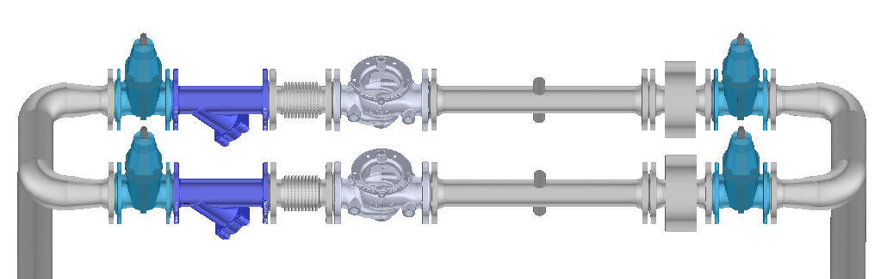

Versorgung sichern
Die Druckregelung muss weiterhin einen stabilen und zuverlässigen Anlagenbetrieb ermöglichen.
Warum wir die Trinkwasserdruckregelanlage Neuer Kamp untersuchen – und welches Potenzial darin steckt.
Bochum verfügt aufgrund seiner Topografie über verschiedene Druckzonen. Druckregelstationen gleichen die unterschiedlichen Druckniveaus aus. In der Projektdokumentation wird ein Eingangsdruck von bis zu 7 bar beschrieben, der auf etwa 3,5 bar reduziert wird.
Bei der herkömmlichen Druckminderung wird die verfügbare Druckenergie nicht zur Stromerzeugung genutzt. Hier setzt unsere Projektidee an.

Aufbau der Druckregelanlage mit zwei Arbeitsschienen.
Die Druckregelung muss weiterhin einen stabilen und zuverlässigen Anlagenbetrieb ermöglichen.
Prüfung, wie sich der Druckunterschied über eine Turbine in elektrische Energie umwandeln lässt.
Unterschiedliche Turbinen- und Aufbauvarianten vergleichen und begründet auswählen.
Die Projektarbeit läuft im Schuljahr 2026/2027 und mündet laut Dokumentation in einer öffentlichen Präsentation im Frühjahr 2027. Projektpartner ist die Stadtwerke Bochum Netz GmbH.